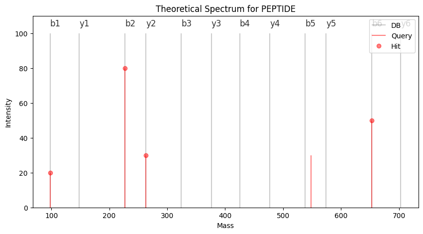

import numpy as np
query_frag = np.array([100, 200, 300, 400])
db_frag = np.array([150, 200, 300, 450])
# Hits: Query 2 -> Db 2 and Query 3 -> Db 3
compare_frags(query_frag, db_frag, frag_tol=1)array([0, 2, 3, 0], dtype=int16)This notebook contains all functions related to searching and getting peptide-spectrum-matches (PSMs). When searching, we compare how similar an experimental spectrum is to a theoretical spectrum. As described in the FASTA notebook, we can calculate theoretical fragment masses for a given peptide sequence and get theoretical spectra. Typically, we calculate a database with all possible spectra, save it to disk, and then compare our experimental data. This allows re-using the database and saving time for this computational step. It could be that the database is too large to be saved on disc; in this case, generate the database on the fly, referring to only have a subset of all FASTA entries in memory and processing them.
To efficiently compare two spectra, we use a pointer based approach. We start with two sorted arrays, the query_frag that contains the m/z positions of the experimental query spectrum and the db_frag which contains the database fragment that is compared against to. The two pointers compare each m/z position with each other and check wheter they are within a certain tolerance frag_tol. Depending on their delta, either of the pointers is advanced. The function returns an arrray named hits that is the same length as the database spectrum and encodes the hit positions.
compare_frags (query_frag:numpy.ndarray, db_frag:numpy.ndarray, frag_tol:float, ppm:bool=False)
Compare query and database frags and find hits
Args: query_frag (np.ndarray): Array with query fragments. db_frag (np.ndarray): Array with database fragments. frag_tol (float): Fragment tolerance for search. ppm (bool, optional): Use ppm as unit or Dalton. Defaults to False.
Returns: np.ndarray: Array with reported hits.
import numpy as np
query_frag = np.array([100, 200, 300, 400])
db_frag = np.array([150, 200, 300, 450])
# Hits: Query 2 -> Db 2 and Query 3 -> Db 3
compare_frags(query_frag, db_frag, frag_tol=1)array([0, 2, 3, 0], dtype=int16)This function allows us to easily compare a query spectrum against a spectrum from a theoretical database.
import matplotlib.pyplot as plt
from alphapept import constants
from alphapept.fasta import get_frag_dict, parse
import alphapept.io
import numpy as np
peptide = 'PEPTIDE'
# Theoretical Spectrum
frag_dict = get_frag_dict(parse(peptide), constants.mass_dict)
db_frag = list(frag_dict.values())
db_frag.sort()
db_int = [100 for _ in db_frag]
# Experimental Spectrum, dummy data
query_frag = np.array([98.06, 227.10, 263.08, 548.06, 653.31])
query_int = np.array([20, 80, 30, 30, 50])
hits = compare_frags(query_frag, db_frag, frag_tol=1)
hitpos = hits[hits > 0] - 1
hit_x = query_frag[hitpos]
hit_y = query_int[hitpos]
plt.figure(figsize=(10,5))
plt.vlines(db_frag, 0, db_int, "k", label="DB", alpha=0.2)
plt.vlines(query_frag, 0, query_int, "r", label="Query", alpha=0.5)
plt.plot(hit_x, hit_y, "ro", label="Hit", alpha=0.5)
for _ in frag_dict.keys():
plt.text(frag_dict[_], 104, _, fontsize=12, alpha = 0.8)
plt.title('Theoretical Spectrum for {}'.format(peptide))
plt.xlabel('Mass')
plt.ylabel('Intensity')
plt.legend()
plt.ylim([0,110])
plt.show()
To compare multiple spectra against a database, we first need some helper functions. First, we need a conversion function to convert from Dalton masses to ppm, which is implemented in the ppm_to_dalton function.
To minimize the search space, we typically only compare spectra with precursors in the same mass range as defined by prec_tol. To look up the limits for search, we define the function get_idxs, which is a wrapper to the fast searchsorted method from NumPy.
The actual search takes place in compare_spectrum_parallel, which utilizes the performance decorator from the performance notebook. Here we save the top matching spectra for each query spectrum. Note that for code compilation reasons, the code of the previously defined function compare_frags is duplicated in here.
ppm_to_dalton (mass:float, prec_tol:int)
Function to convert ppm tolerances to Dalton.
Args: mass (float): Base mass. prec_tol (int): Tolerance.
Returns: float: Tolerance in Dalton.
get_idxs (db_masses:numpy.ndarray, query_masses:numpy.ndarray, prec_tol:float, ppm:bool)
Function to get upper and lower limits to define search range for a given precursor tolerance.
Args: db_masses (np.ndarray): Array containing database masses. query_masses (np.ndarray): Array containing query masses. prec_tol (float): Precursor tolerance for search. ppm: Flag to use ppm instead of Dalton.
Returns: (np.ndarray, np.ndarray): Indices to lower and upper bounds.
compare_spectrum_parallel (query_idx:int, query_masses:numpy.ndarray, idxs_lower:numpy.ndarray, idxs_higher:numpy.ndarray, query_indices:numpy.ndarray, query_frags:numpy.ndarray, query_ints:numpy.ndarray, db_indices:numpy.ndarray, db_frags:numpy.ndarray, best_hits:numpy.ndarray, score:numpy.ndarray, frag_tol:float, ppm:bool)
Compares a spectrum and writes to the best_hits and score.
Args: query_idx (int): Integer to the query_spectrum that should be compared. query_masses (np.ndarray): Array with query masses. idxs_lower (np.ndarray): Array with indices for lower search boundary. idxs_higher (np.ndarray): Array with indices for upper search boundary. query_indices (np.ndarray): Array with indices to the query data. query_frags (np.ndarray): Array with frag types of the query data. query_ints (np.ndarray): Array with fragment intensities from the query. db_indices (np.ndarray): Array with indices to the database data. db_frags (np.ndarray): Array with frag types of the db data. best_hits (np.ndarray): Reporting array which stores indices to the best hits. score (np.ndarray): Reporting array that stores the scores of the best hits. frag_tol (float): Fragment tolerance for search. ppm (bool): Flag to use ppm instead of Dalton.
To conveniently perform peptide-spectrum matches on multiple datasets we define a wrapper get_psms that returns the PSMS when handing over query_data and db_data.
query_data_to_features (query_data:dict)
Helper function to extract features from query data. This is used when the feature finder will not be used.
Args: query_data (dict): Data structure containing the query data.
Returns: pd.DataFrame: Pandas dataframe so that it can be used for subsequent processing.
get_psms (query_data:dict, db_data:dict, features:pandas.core.frame.DataFrame, parallel:bool, frag_tol:float, prec_tol:float, ppm:bool, min_frag_hits:int, callback:Callable=None, prec_tol_calibrated:float=None, frag_tol_calibrated:float=None, **kwargs)
[summary]
Args: query_data (dict): Data structure containing the query data. db_data (dict): Data structure containing the database data. features (pd.DataFrame): Pandas dataframe containing feature data. parallel (bool): Flag to use parallel processing. frag_tol (float): Fragment tolerance for search. prec_tol (float): Precursor tolerance for search. ppm (bool): Flag to use ppm instead of Dalton. min_frag_hits (int): Minimum number of frag hits to report a PSMs. callback (Callable, optional): Optional callback. Defaults to None. prec_tol_calibrated (float, optional): Precursor tolerance if calibration exists. Defaults to None. frag_tol_calibrated (float, optional): Fragment tolerance if calibration exists. Defaults to None.
Returns: np.ndarray: Numpy recordarray storing the PSMs. int: 0
The basic fragment comparison only counts the number of hits and matched intensity fraction when comparing a theoretical spectrum to an experimental one. Based on this metric, we can drastically reduce the number of candidates one wants to analyze for an in-depth comparison, which requires additional features. The following section describes several functions which extract parameters to compare spectrum matches better.
frag_delta substracts the experimental fragment masses from the theoretical fragment masses for each hit.
frag_delta (query_frag:numpy.ndarray, db_frag:numpy.ndarray, hits:numpy.ndarray)
Calculates the mass difference for a given array of hits in Dalton and ppm.
Args: query_frag (np.ndarray): Array with query fragments. db_frag (np.ndarray): Array with database fragments. hits (np.ndarray): Array with reported hits.
Returns: float: Fragment deltas in Dalton. float: Fragment deltas in ppm.
intensity_fraction calculates the fraction of matched intensity. This refers to the intensity of all hits compared to the intensity of all peaks in the query spectrum.
intensity_fraction (query_int:numpy.ndarray, hits:numpy.ndarray)
Calculate the fraction of matched intensity
Args: query_int (np.ndarray): Array with query intensities. hits (np.ndarray): Array with reported hits.
Returns: float: Fraction of the matched intensity to the total intensity.
To have an efficient data format to store PSMs in the search. We use numpy-recarrays and define the utility functions add_column and remove_column to append and remove data.
remove_column (recarray:numpy.ndarray, name:str)
Function to remove a column from a recarray.
Args: recarray (np.ndarray): NumPy record array. name (str): Column name of the column to be removed.
Returns: np.ndarray: NumPy record array with removed column.
add_column (recarray:numpy.ndarray, column:numpy.ndarray, name:str)
Function to add a column with given name to recarray
Args: recarray (np.ndarray): NumPy record array. column (np.ndarray): Data column that should be added to the record array. name (str): Name of the column in the new recordarray.
Returns: np.ndarray: NumPy recordarray with new field.
When performing a database search, we need to know which experimental spectrum we compare with what database entry. We distinguish three indices:
Initially, the get_psms function accepts experimental data in the form of query_data. Here, the query_idx refers to the index to query_data. However, this might not be the same index as the raw data. This is due to the implementation of the matching of MS1-features to MS2 spectra. Here we allow multiple matches and implement this by repeating the respective spectrum.
We then add the two columns feature_idx and raw_idx to the PSMs to later be able to distinguish where the match originated. In this case, raw_idx refers to the original spectrum.
When not applying feature finding, raw_idx and query_idx are equivalent.
In the score-function we use the pre-filtered PSMs to extract additional columns for scoring such as the offset from theoretical to experimental precursor or the number of b- and y-ion hits.
get_hits (query_frag:numpy.ndarray, query_int:numpy.ndarray, db_frag:numpy.ndarray, db_int:numpy.ndarray, frag_type:numpy.ndarray, mtol:float, ppm:bool, losses:list)
Function to extract the types of hits based on a single PSMs.
The reporting array stores information about the matched fragment_ions in a record array.
Args: query_frag (np.ndarray): Array with query fragments. query_int (np.ndarray): Array with query intensities. db_frag (np.ndarray): Array with database fragments. db_int (np.ndarray): Array with database intensities. frag_type (np.ndarray): Array with fragment types. mtol (float): Mass tolerance. ppm (bool): Flag to use ppm instead of Dalton. losses (list): List of losses.
Returns: np.ndarray: NumPy array that stores ion information.
score (psms:numpy.recarray, query_masses:numpy.ndarray, query_masses_raw:numpy.ndarray, query_frags:numpy.ndarray, query_ints:numpy.ndarray, query_indices:numpy.ndarray, db_masses:numpy.ndarray, db_frags:numpy.ndarray, frag_types:numpy.ndarray, mtol:float, db_indices:numpy.ndarray, ppm:bool, psms_dtype:list, db_ints:numpy.ndarray=None, parallel:bool=False)
Function to extract score columns when giving a recordarray with PSMs.
Args: psms (np.recarray): Recordarray containing PSMs. query_masses (np.ndarray): Array with query masses. query_masses_raw (np.ndarray): Array with raw query masses. query_frags (np.ndarray): Array with frag types of the query data. query_ints (np.ndarray): Array with fragment intensities from the query. query_indices (np.ndarray): Array with indices to the query data. db_masses (np.ndarray): Array with database masses. db_frags (np.ndarray): Array with fragment masses. frag_types (np.ndarray): Array with fragment types. mtol (float): Mass tolerance. db_indices (np.ndarray): Array with indices to the database array. ppm (bool): Flag to use ppm instead of Dalton. psms_dtype (list): List describing the dtype of the PSMs record array. db_ints (np.ndarray, optional): Array with database intensities. Defaults to None. parallel (bool, optional): Flag to use parallel processing. Defaults to False.
Returns: np.recarray: Recordarray containing PSMs with additional columns. np.ndarray: NumPy array containing ion information.
get_sequences (psms:numpy.recarray, db_seqs:numpy.ndarray)
Get sequences to add them to a recarray
Args: psms (np.recarray): Recordarray containing PSMs. db_seqs (np.ndarray): NumPy array containing sequences.
Returns: np.ndarray: NumPy array containing a subset of sequences.
get_score_columns (psms:numpy.recarray, query_data:dict, db_data:Union[dict,str], features:pandas.core.frame.DataFrame, parallel:bool, frag_tol:float, prec_tol:float, ppm:bool, prec_tol_calibrated:Union[NoneType,float]=None, frag_tol_calibrated:float=None, **kwargs)
Wrapper function to extract score columns.
Args: psms (np.recarray): Recordarray containing PSMs. query_data (dict): Data structure containing the query data. db_data: Union[dict, str]: Data structure containing the database data or path to database. features (pd.DataFrame): Pandas dataframe containing feature data. parallel (bool): Flag to use parallel processing. frag_tol (float): Fragment tolerance for search. prec_tol (float): Precursor tolerance for search. ppm (bool): Flag to use ppm instead of Dalton. prec_tol_calibrated (Union[None, float], optional): Calibrated offset mass. Defaults to None. frag_tol_calibrated (float, optional): Fragment tolerance if calibration exists. Defaults to None.
Returns: np.recarray: Recordarray containing PSMs with additional columns. np.ndarray: NumPy array containing ion information.
plot_psms (index, ms_file)
We save intermediate results to hdf5 files
search_db (to_process:tuple, callback:Callable=None, parallel:bool=False, first_search:bool=True)
Wrapper function to perform database search to be used by a parallel pool.
Args: to_process (tuple): Tuple containing an index to the file and the experiment settings. callback (Callable, optional): Callback function to indicate progress. Defaults to None. parallel (bool, optional): Flag to use parallel processing. Defaults to False. first_search (bool, optional): Flag to indicate this is the first search. Defaults to True.
Returns: Union[bool, str]: Returns True if the search was successfull, otherwise returns a string containing the Exception.
store_hdf (df:pandas.core.frame.DataFrame, path:str, key:str, replace:bool=False, swmr:bool=False)
Wrapper function to store a DataFrame in an hdf.
Args: df (pd.DataFrame): DataFrame to be stored. path (str): Target path of the hdf file. key (str): Name of the field to be saved. replace (bool, optional): Flag whether the field should be replaced.. Defaults to False. swmr (bool, optional): Flag to use swmr(single write multiple read)-mode. Defaults to False.
search_fasta_block (to_process:tuple)
Search fasta block. This file digests per block and does not use a saved database. For searches with big fasta files or unspecific searches.
Args: to_process (tuple): Tuple containing a fasta_index, fasta_block, a list of files and a list of experimental settings.
Returns: list: A list of dataframes when searching the respective file. int: Number of new peptides that were generated in this iteration.
filter_top_n (temp:pandas.core.frame.DataFrame, top_n:int=10)
Takes a dataframe and keeps only the top n entries (based on hits). Combines fasta indices for sequences.
Args: temp (pd.DataFrame): Pandas DataFrame containing PSMs. top_n (int, optional): Number of top-n entries to be kept. Defaults to 10.
Returns: pd.DataFrame: Filtered DataFrame.
search_parallel (settings:dict, calibration:Union[list,NoneType]=None, fragment_calibration:Union[list,NoneType]=None, callback:Union[Callable,NoneType]=None)
Function to search multiple ms_data files in parallel. This function will additionally calculate fragments and precursor masses from a given FASTA file.
Args: settings (dict): Settings file containg the experimental definitions. calibration (Union[list, None], optional): List of calibrated offsets. Defaults to None. fragment_calibration (Union[list, None], optional): List of calibrated fragment offsets. Defaults to None. callback (Union[Callable, None], optional): Callback function. Defaults to None.
Returns: dict: FASTA dictionary.
ion_extractor (df:pandas.core.frame.DataFrame, ms_file, frag_tol:float, ppm:bool)
Extracts the matched hits (fragment_ions) from a dataframe.
Args: df (pd.DataFrame): Pandas dataframe containing the results of the first search. ms_file : MsFile frag_tol (float): Fragment tolerance for search. ppm (bool): Flag to use ppm instead of Dalton.
Returns: np.ndarray: Numpy recordarray storing the PSMs. np.ndarray: Numpy recordarray storing the fragment_ions.